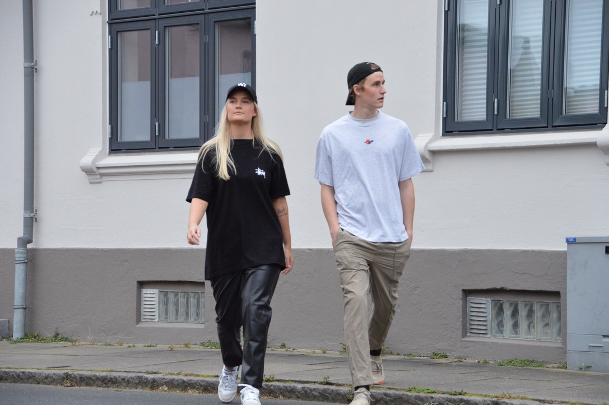

Rikke Agerholm og Mads Holm Johnsen udfordrer dagligt hinanden i at mestre balancegangen i at hvile sig selv og udfordre sin stil. Til dagligt figurerer de smilende på hinandens Instagramfeeds og optræder hånd i hånd på streetstyle-billeder.
Det modeinteresseret par går meget op i mode, og er eksperter i at sammensætte sjove, nyskabende outfits, samtidig med at de kæmper for at lære hvordan vi skal kombinere mode med bæredygtighed.
I følgende interview snakker parret om deres fælles passion, nemlig mode.
Hvad er jeres forhold til mode?
"Jeg er tæt knyttet til min garderobe. Jeg er en nørd. Især når det omhandler sneakers. De skal helst stå urørt i deres originale æsker." fortæller Mads.
"Altså, når mads bruger penge på nye ting, så skal det jo bare hænge i skabet hvor han dagligt lige tjekker, om det stadig hænger hvor det gjorde i går. I stedet for at tage det i brug! Det er fuldstændig tosset," kommenterer Rikke.
"jeg er modsat, jeg skal bruge mine ting i sekundet efter jeg har købt det. Jeg bliver simpelthen så gal på Mads, når han bruger penge bare for at smide endnu en trøje ind på tøjstativet. Som om pladsen ikke er et problem i forvejen!" griner Rikke.
Hvad betyder mode for dig, Rikke?
"Det er både min hobby og min livsstil. Jeg elsker at udtrykke mig igennem min stil, man kan være eksperimenterende og det elsker jeg!
Mads, hvornår føler du dig godt tilpas?
Jeg føler mig powerful, når jeg føler mig komfortabel. Det går hånd i hånd. Jeg ved intet værre end at føle mig utilpas i mit outfit. Jeg udstråler usikkerhed med det samme."

I er efterhånden blevet 'influencers' på Instagram, mærker I et ansvar i forhold til jeres livsstil?
"Vi snakker tit om, hvordan vi skal huske at genbruge vores ting, og hvordan det ikke handler om at vise vores dyre ting frem, men at vise vores selvværd frem! Jeg håber, at unge piger som følger med hos mig, kan mærke at jeg gerne vil reklamere for at gå op i sin stil udelukkende for at gå op i sin person. Giver det mening? Svarer Rikke
"jeg tror, at det er okay at vi ser op til andre. Man skal drømme og sætte mål, ellers står man bare fast. Jeg har også drømme og ambitioner. Jeg bliver inspireret hos alle, fra modehuse til den 15-årige avisdreng, på vores vej. Her er det vigtig at slå fast, at lade sig inspirere ikke er det samme som at ville blive en gengivelse af andre. Vi kan sagtnes være forskellige men inspirere hinanden. Det er netop det, jeg håber at vise på min platform." Fortæller Mads
Hvordan spiller bæredygtighed en rolle for jer?
"Se den er svær! Jeg går meget op i miljøet, men jeg går også op i at jeg ikke går på kompromis med min interesse. Derfor har jeg en regel: aldrig planlæg outfits i forvejen.
Hvis jeg begynder at planlægge outfits, kommer jeg i tanke om, at jeg lige mangler en taske eller et par læderbukser, og så går jeg ud og køber det. Man må lære sine svagheder at kende, og så bekæmpe dem. Man kan ikke nå at impulskøbe 20 minutter inden afgang." svarer Rikke.
"jeg går meget op i at genbruge mit tøj, og forny min garderobe med sko og hatte. Det siger meget for et outfit. Det måske ikke optimalt, men det er en start. Og vi skal alle lære og vende os til nye tiltag." fortæller Mads.
"Og så gør billeder meget! Lokation, lys, vinkler og vejr kan give forskellige udtryk, og pludselig ser du slet ikke at jeg har samme outfit på" afslutter RIkke